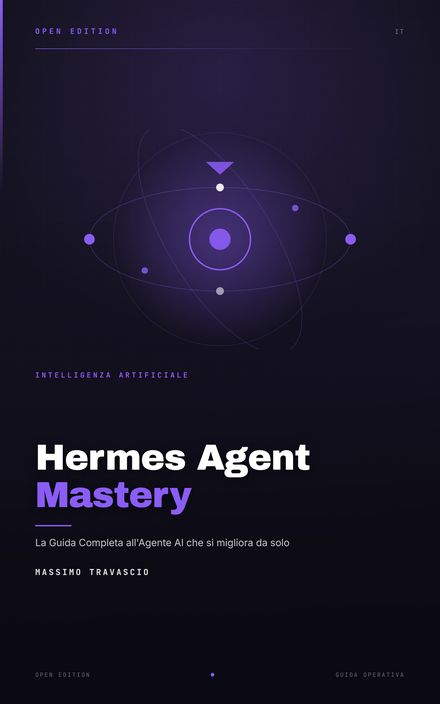
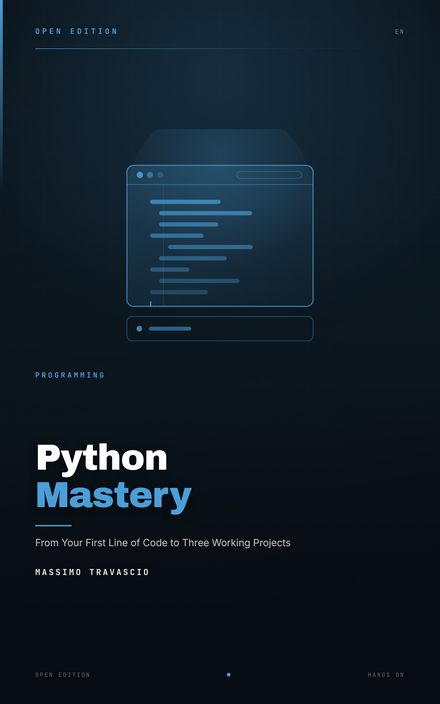
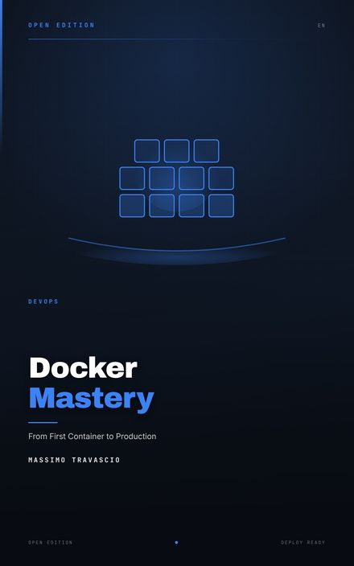
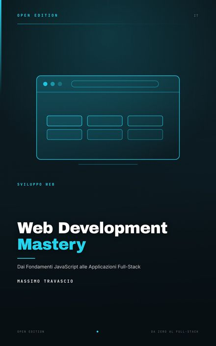
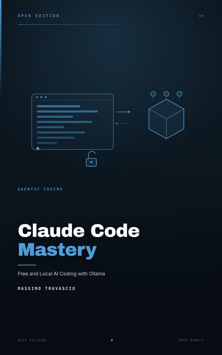
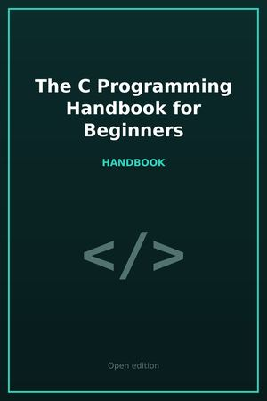

Gratuita · Android e iOS
Rege o Maria
La consacrazione a Maria in trentatré giorni, secondo San Luigi Maria Grignion de Montfort. Il testo di ogni giornata, l'audio per chi preferisce ascoltare, il diario che resta sul telefono.
Torino · ingegnere di rete
Progetto reti di computer da vent'anni e scrivo software per passione. Nel tempo che resta traduco manuali, impagino libri e costruisco app che servono a qualcuno: a chi prega, a chi studia, a chi ripara un computer.
Tre applicazioni gratuite, scritte in Flutter per Android e iOS. Sono nate da una necessità concreta — un percorso da seguire, un test da capire, degli esercizi da fare — e sono senza pubblicità e senza account.
Gratuita · Android e iOS
La consacrazione a Maria in trentatré giorni, secondo San Luigi Maria Grignion de Montfort. Il testo di ogni giornata, l'audio per chi preferisce ascoltare, il diario che resta sul telefono.
Gratuita · Android
I percorsi di sant'Ignazio di Loyola, con le meditazioni audio e i passi da seguire giorno per giorno. Pensata per chi vuole fare gli esercizi dentro la vita di tutti i giorni.
Gratuita · Android e iOS
Il test di Heymans e Wiersma, tradotto e spiegato: otto profili per capire perché ci arrabbiamo, come reagiamo e che cosa ci fa bene. Con i risultati salvati e confrontabili.
Pubblico con Amazon KDP, in italiano e in inglese. Le copertine le faccio io, con HTML e CSS, perché un libro che costa tre euro merita lo stesso rispetto di uno che ne costa trenta.





Tutti i titoli, comprese le edizioni in inglese, francese e tedesco →
03 — Traduzioni
freeCodeCamp pubblica i suoi manuali gratis, in inglese e sotto licenza aperta. Io li traduco, li impagino in EPUB e gli disegno una copertina: dal C alla sicurezza informatica, dal prompt engineering ai database.
Non è un corso mio — è il loro materiale, reso leggibile in italiano, con l'attribuzione e la licenza al posto giusto. Mi serviva per i corsi che seguo, poi è diventato un archivio.

Siti statici, scritti a mano, senza cookie di terze parti e senza WordPress. Nascono da una comunità concreta: quella dell'Istituto del Verbo Incarnato a Torino, che continua anche dopo la partenza dei padri.
Qualche strumento che uso io, pubblicato perché può servire anche ad altri. Tutto su GitHub, quasi tutto in Dart e Python.
06 — Contatti
Se ti serve un sito per una comunità, una mano su un progetto Flutter, un manuale da tradurre o semplicemente una copia di uno degli ebook, la mia posta è aperta. Rispondo quando posso, di solito la sera.